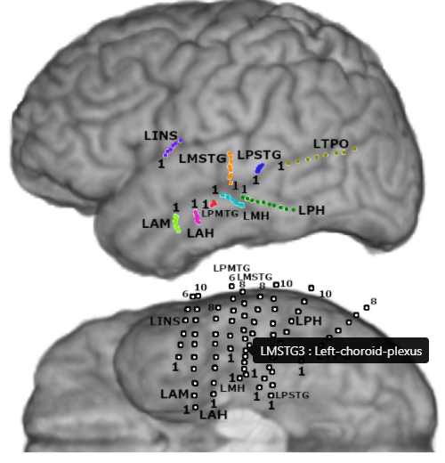

General¶
Data folder structure¶
data
PY#
data
info
reconstruction.jpg
reconstruction.nii
channels.json
brain.glb
electrodes.glb
anatomicalLabels.tsv
Info¶
Channels.json¶
{
"elec1": { "u": 0.439, "v": 0.111 },
"elec2": { "u": 0.436, "v": 0.136 },
"elec3": { "u": 0.438, "v": 0.161 },
"elec4": { "u": 0.435, "v": 0.192 },
}
anatomicalLabels.tsv¶
name |
x |
y |
z |
Label |
|---|---|---|---|---|
elec’1 |
144.678 |
154.419 |
129.642 |
Left-Hippocampus |
elec’2 |
149.758 |
154.419 |
129.674 |
wm-lh-inferiortemporal |
elec’3 |
154.790 |
154.419 |
129.696 |
Left-Thalamus-Proper |
elec’4 |
159.366 |
154.419 |
129.712 |
ctx-lh-precentral |
reconstruction.jpg¶
using info/reconstruction.jpg, info/channels.json, info/anatomicalLabels.tsv
brain.glb¶
- Brain
- Gyri
lh.bankssts
lh.cuneus
rh. superiorfrontal
rh. latealocciptal
…
- SubcorticalStructs
3rd-Ventricle
CSF
Left-Vessel
Right-Hippocampus
…
- WhiteMatter
Left-Cerebral-White-Matter
Right-Cerebral-WhiteMatter
{kind=link}
{kind=link}
Reconstruction pipeline¶
For more information on how to complete your own reconstruction (both 2D and 3D) see: Recon pipeline
Dependencies:
Matlab
Fieltrip
SPM12
Freesurfer (at least the matlab tools for Fieltrip to use)
Docker (this is all you need for the 3D reconstruction and visualization)